[To catch up, here are Days 1 and 2-A and 2-B and 3 and 4 and 5A]
While we freshened up in our hotel room at the Hampton Inn, I took a quick picture of what was happening in the streets below. The excitement was quickly building!
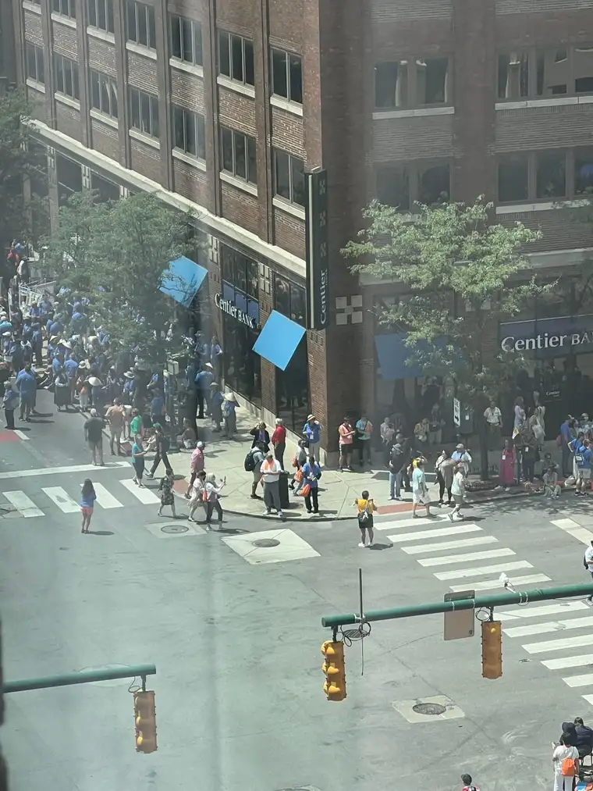
Finally, we were ready to join the throngs.
But where where would we find our place in the streets? It was all unknown. And another question. We’d been challenged to “Walk with One,” to find someone else with whom to share our journey. Who would it be?
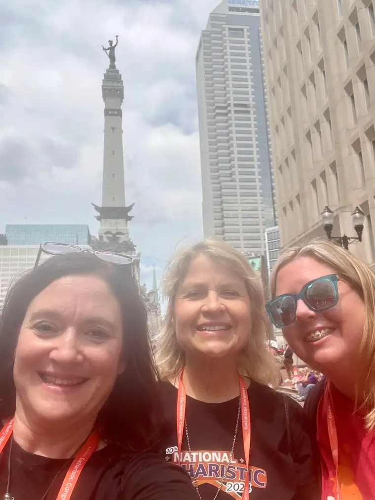
It turned out to be Beth, one of our fellow pilgrims who joined us as we were crossing the street to head north, searching for our spot to settle while awaiting Jesus’ presence. “You want to join us?” we said as we crossed over. “Sure, if you don’t mind!” “Of course not. C’mon!”
Beth was a good sport. Both Joanne and I were like Zacchaeus, climbing the tree to get the best glimpse possible of our Lord. We were always moving, searching for our settling spot.
As we approached the Monument Circle, we realized what a great place this would be to pause, in anticipation of seeing Jesus approaching! It is positioned in the middle of the street where he would be passing.

Beth caught me walking over to the water fountain in the back, where Joanne joined me for a “We’re ready to roll!” shot.
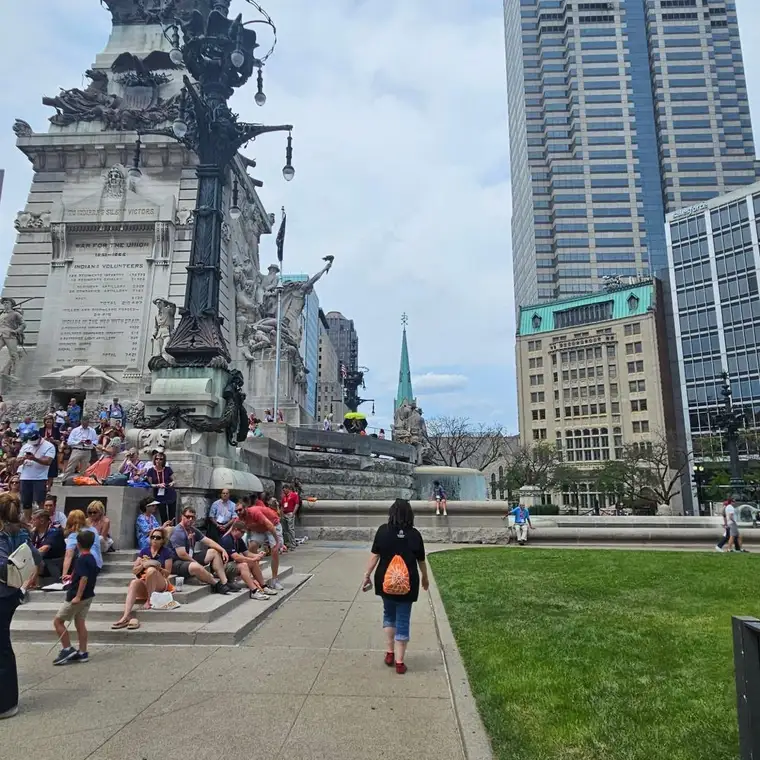
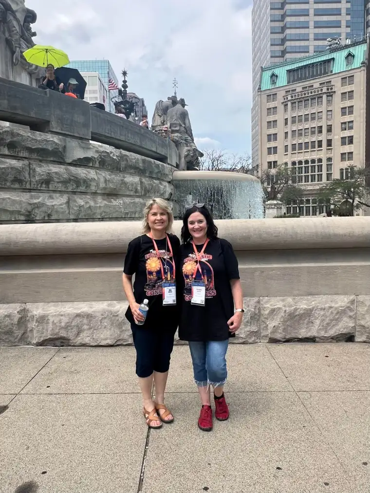
There were still spots on the steps by the time we got there, but, not many.
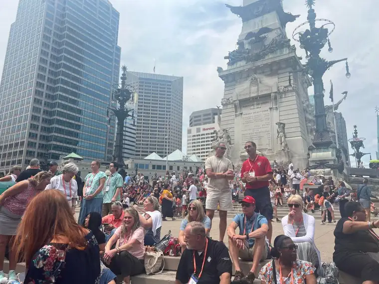
These are moments when our humanity creeps out, including in a crowd of 60,000 inspired and excited Christians. Let’s just say there may have been a mother saving spots for her wiggly children who was a little snappy with us. We tried to honor her commitment: “We’ve been waiting here an hour.” At the same time, there were no nametags and we eventually secured a little circle on the earth on which to stand.
In this photo, you can see the Hampton Inn on the left side, background–our nightly resting place. It was pretty cool to realize the procession would be passing by our temporary home. A few of our pilgrims who weren’t up to fighting the crowds watched from up there.
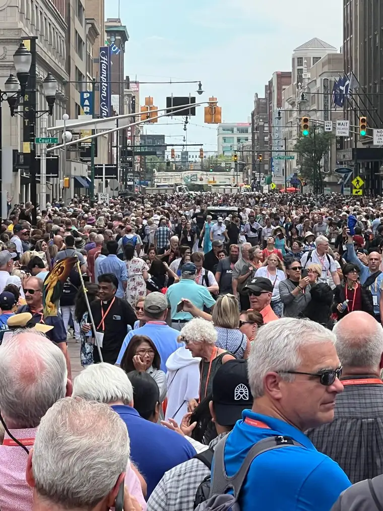
As perfect as the circle was for our viewing, the sun was beating down hard right there, and, well, me and the sun don’t have the best relationship. I love his sunny disposition, but he can be harsh on my Irish skin. We did the best we could.
Honestly, it was such a thrill that it was nearly impossible to be ornery for longer than a second. I have always loved people watching and it was fun to see everyone gathering to find their perches. If I were 12, I would have joined the kids in green who found a perfect gazing spot!
I also loved all the sounds. People singing in excited anticipation of Jesus’ entrance into the streets. Listen here: https://www.youtube.com/watch?v=8Fbzw2-Yl2o
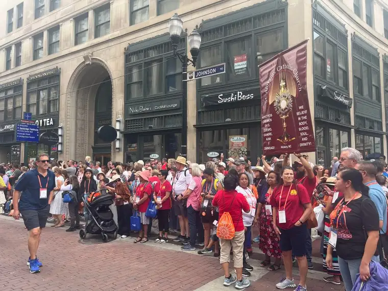
There were a few brave souls who showed up to tell us that we are lost souls. This guy (left below) was moving about through the crowds, stirring things up. But he was a little outnumbered.
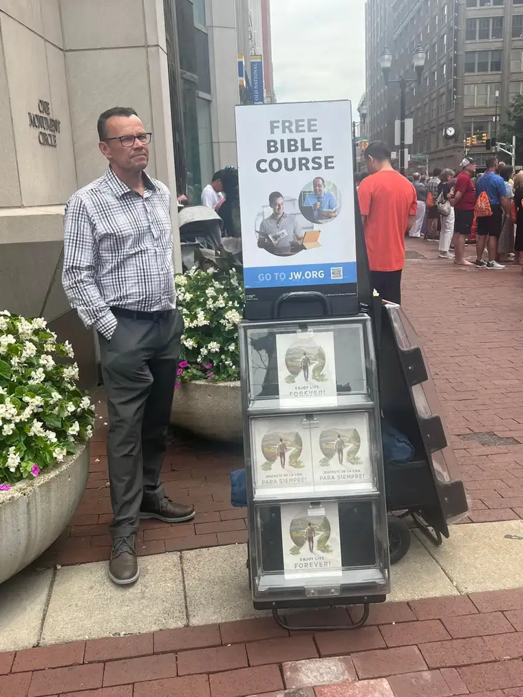
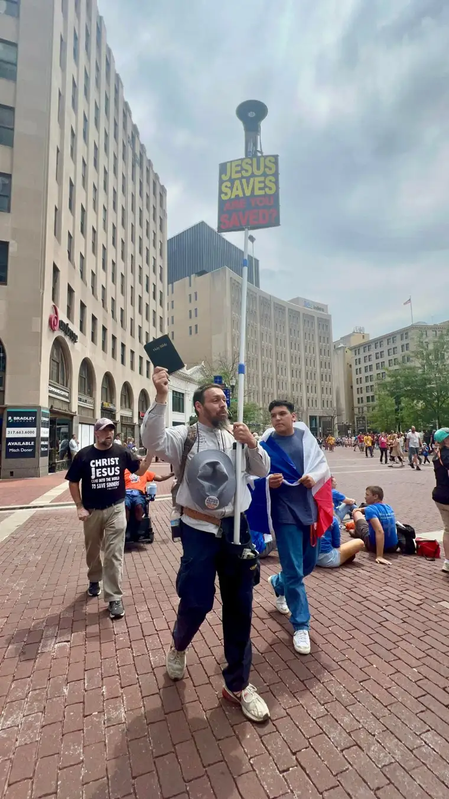
And this gentleman (right) said he stands here everyday, so his routine was the same as always, but a few extra people had appeared around his spot on the sidewalk that day.
I wonder what they would have thought about our revival sessions in the stadium? Probably not much. It is hard to teach old dogs new tricks.
We waited for what seemed like forever before the procession appeared, but eventually, something in the crowd down the middle of the street took on a different shape; the shape of religious, starting with the young seminarians.
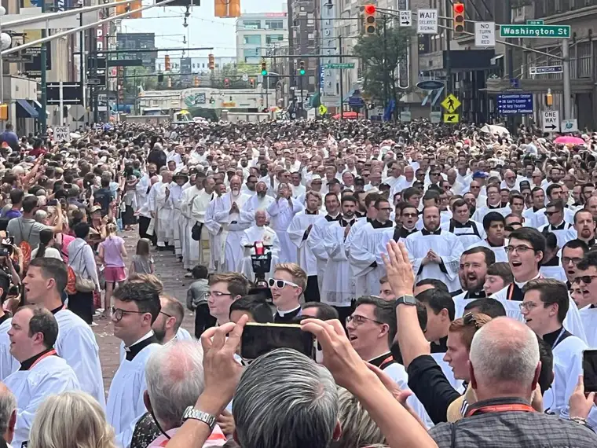
The religious sisters (shown in photo earlier and also in video here: https://www.youtube.com/watch?v=MMawLkPwlCc) had preceded them; priests and cardinals showed up next.
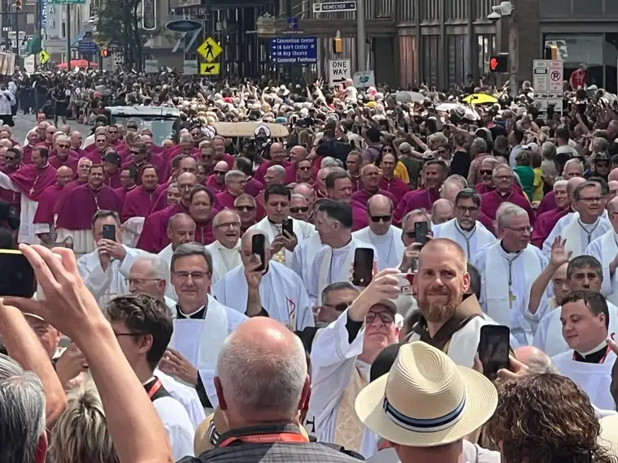
And behind them? Lord of Lord and King of Kings! Absolutely thrilling, and accompanied by beautiful hymns announcing him. Watch here: https://www.youtube.com/watch?v=A__aMNlojhw
Praise God from whom all blessings flow!

Here’s a short video of this moment: https://www.youtube.com/watch?v=NSfupM6hmmo. And this one, too: https://www.youtube.com/shorts/vI7SqkEdDEE
He came oh so close…

And eventually, passed by. As he did, the hymns melded with secular music coming from nearby shops.
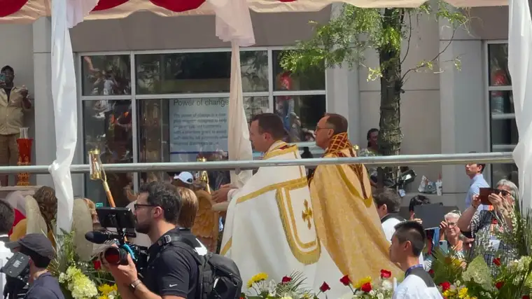
But it wasn’t over. The procession was leading somewhere; it wasn’t stopping at Monument Circle. After allowing Jesus to pass, we began chasing after him, eventually slipping to the middle of procession, and walking, very fast, hoping to come closer.
We were practically running at points as we clung to one another and kept pressing forward. It wasn’t a long walk, but in the crowd of so many, it was not easy at all. It was a rush.
I still don’t know how, but we made it to the front. During this part of the walk, I was taking a Facebook Live video to share the scene in the moment on social media, so I didn’t take any photos. But Beth caught some of Joanne and me snuggled up to the fence, as far as we could go.
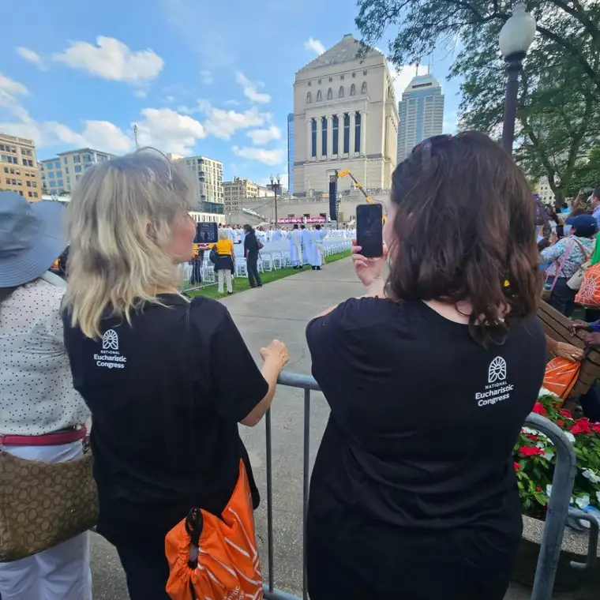
She also snapped one of the sea of people behind us to show how far to the front we’d gotten, and how many were still behind us. “I never would have gotten this far up if it hadn’t been for you two!” she told us.
Well, we were delighted to have her with us to complete our threesome, and grateful to have been part of this amazing day. As I write this, I realize that I’m going to have to make a part 3, because, well, the day wasn’t over. There was much more to come!